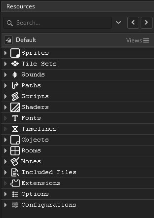

Las Preferencias del árbol de recursos se usan para definir ciertas propiedades de cómo funciona el árbol de recursos y sus elementos. Las principales opciones son:
- Número máximo de recursos abiertos simultáneamente sin advertencia: puede seleccionar múltiples recursos para abrir a la vez mediante el uso de
 /
/  +
+  para seleccionarlos y luego hacer clic derecho
para seleccionarlos y luego hacer clic derecho  y elegir abrir todo. Si ha seleccionado más que el número especificado en esta opción, se le mostrará una advertencia, ya que tener demasiados recursos abiertos a la vez puede causar problemas de rendimiento en las máquinas de gama más baja. El valor predeterminado es 20.
y elegir abrir todo. Si ha seleccionado más que el número especificado en esta opción, se le mostrará una advertencia, ya que tener demasiados recursos abiertos a la vez puede causar problemas de rendimiento en las máquinas de gama más baja. El valor predeterminado es 20. - El doble clic de Sprite abre el editor de imágenes: haciendo doble clic por defecto en cualquier recurso se abrirá ese recurso para su edición, pero a menudo cuando se trata de sprites, después de la configuración inicial cuando se crea el nuevo recurso, se abre para editar la imagen en lugar de las propiedades de los sprites. Al seleccionar esta opción, se abrirá el editor de imágenes para el recurso sprite en lugar del propio recurso sprite. Todavía puede abrir el editor de sprites haciendo clic con el botón derecho y seleccionando Open Properties. Esta opción está apagada por defecto.
- Objeto doble clic abre todos los eventos de objeto: por defecto haciendo doble clic en cualquier recurso se abrirá ese recurso para su edición, pero a menudo cuando se trata de objetos, después de la configuración inicial cuando se crea el nuevo recurso, se abre para editar los eventos solo en lugar de las propiedades del objeto. Al seleccionar esta opción, se abrirán los diferentes eventos de objetos en un nuevo espacio de trabajo, cada evento recibirá su propia pestaña dentro del nuevo espacio de trabajo. Aún puede abrir el editor de objetos haciendo clic con el botón derecho y seleccionando Open Properties. Esta opción está apagada por defecto.
- La fuente de recursos puede escalar por debajo del 100%: cuando selecciona esta opción y luego cambia la escala de tamaño del elemento de recursos, puede forzar a GameMaker Studio 2 a reducir el tamaño del texto y el tamaño del ícono en el árbol de recursos cuando se establece en menos de 100% Por defecto está desactivado y el texto árbol de recursos sólo se ampliará no hacia abajo.
- La fuente de recursos puede escalar por encima del 100%: cuando selecciona esta opción y luego cambia la escala de tamaño del elemento de recursos, puede forzar a GameMaker Studio 2 a aumentar el tamaño del texto y el tamaño del ícono en el árbol de recursos cuando se configura como mayor de 100% Por defecto está en el texto árbol de recursos ampliará.
- Zoom predeterminado (%): establece el porcentaje de zoom predeterminado para el árbol de recursos cuando inicia un nuevo proyecto. El valor predeterminado es 100%.
- Zoom mínimo (%): Establece el valor de zoom mínimo permitido para el árbol de recursos. El valor predeterminado es 50%.
- Zoom máximo (%): Establece el valor de zoom máximo permitido para el árbol de recursos. El valor predeterminado es 250%.
- Mostrar separadores horizontales: aquí puede activar / desactivar los separadores horizontales entre diferentes tipos de activos en el árbol de recursos. Esto se verifica por defecto para mostrar los separadores.
- Mostrar líneas de árbol: aquí puede habilitar / deshabilitar las líneas de árbol que se muestran al costado de los activos en el árbol de recursos. Esto se marca por defecto para mostrar las líneas de árbol.

- Mostrar iconos de nodo de grupo: active o desactive la representación de icono de cada tipo de recurso que se muestra junto al nombre del recurso. Esto está desactivada por defecto.
Aquí puede cambiar el esquema de colores utilizado por GameMaker Studio 2 al mostrar el Árbol de recursos. Esta sección está dividida en los siguientes tres grupos:
- Antecedentes:
Esta sección le permite establecer el color de fondo para los principales nodos de activos en el Árbol de recursos. Al hacer clic en cualquiera de ellos, abrirá el Selector de color donde podrá elegir el color y el alfa que se combinarán con el color IDE general para el nodo. El valor predeterminado de cada uno es $FFFFFFFF.
- Ícono:
Esta sección le permite establecer el color y el alfa para los iconos de carpeta utilizados para indicar los diferentes tipos de activos del árbol de recursos. El valor predeterminado de cada uno es $FFFFFFFF. Tenga en cuenta que si establece el valor alfa en 0, no verá estos íconos.
- Etiqueta: La "etiqueta" es el texto que se utiliza para describir o nombrar el nodo o elemento en el árbol de recursos, y aquí puede cambiar el color del texto, así como la fuente y el estilo que se utilizarán. Primero debe cambiar las configuraciones predeterminadas para crear una base para todos los nodos del árbol de recursos, y luego continuar editando las configuraciones individuales de etiqueta de nodo según sea necesario (tenga en cuenta que todas tendrán seleccionado "Usar predeterminado" para comenzar).
- Opciones misceláneas:
Estas opciones afectan ciertas propiedades de color globales para el árbol de recursos:
- Color del separador horizontal: el color de la barra que separa cada tipo de recurso discreto en el árbol. El color predeterminado es $3E3E3EFF.
- Color de línea de árbol: el color que se usará para dibujar las líneas de árbol entre diferentes nodos de recursos. El color predeterminado es $666666FF.
- Destaque de selección de nodo: este es el color que se usará para resaltar los nodos seleccionados dentro del árbol de recursos. El color predeterminado es $039D5BFF.
Aquí puede seleccionar el comportamiento de los diálogos de confirmación al trabajar con un recurso del árbol de recursos. Las opciones disponibles son:
- Respuesta automática a la eliminación de recursos: cuando elimina un recurso del árbol de recursos normalmente recibe una advertencia que le pregunta si está seguro de que desea continuar. Al configurar esta opción en "Aceptar", el mensaje se suprimirá como si hubiera hecho clic en el botón "Aceptar" para continuar. El valor predeterminado es "Mostrar mensaje".
- Respuesta automática a la apertura de múltiples recursos: como se mencionó anteriormente en las preferencias generales del Árbol de recursos, cuando abre múltiples recursos a la vez desde el árbol de recursos, puede recibir una advertencia si el número excede el número especificado. Al configurar esta opción en "Aceptar", la advertencia se suprimirá como si hubiera hecho clic en el botón "Aceptar" para continuar. El valor predeterminado es "Mostrar mensaje".
- Respuesta automática a la configuración de un elemento primario de la sala a través del arrastre del nodo: cuando arrastra una habitación sobre otra habitación en el árbol de recursos y luego la suelta, se le mostrará un mensaje que le pregunta si desea que la habitación sea un "niño" de la habitación caído en. Al configurar esta opción en "Aceptar", la advertencia se suprimirá como si hubiera hecho clic en el botón "Aceptar" para continuar. El valor predeterminado es "Mostrar mensaje".
- Respuesta automática a la eliminación de vistas personalizadas: cuando haya creado una vista de Árbol de recursos personalizada y luego elija eliminarla, se le mostrará un mensaje que le preguntará si desea continuar y eliminar la vista. Al configurar esta opción en "Aceptar", la advertencia se suprimirá como si hubiera hecho clic en el botón "Aceptar" para continuar. El valor predeterminado es "Mostrar mensaje".
- Respuesta automática a la conversión de DnD™ al lenguaje de GameMaker: cuando selecciona la opción para convertir un nodo DnD™ a GML, se le pedirá que confirme el cambio, ya que no se puede deshacer. Al configurar esta opción en "Aceptar", la advertencia se suprimirá como si hubiera hecho clic en el botón "Aceptar" para continuar. El valor predeterminado es "Mostrar mensaje".